Applied Computer Vision — Enxergando o mundo real
Professores: Arnaldo Viana e Paulo Rodrigues
Detecção de buracos em vias públicas em tempo real com YOLO26,
rastreamento multiobjeto e realidade aumentada
Integrantes
| Deivison Pertel | RM 550803 |
| Eduardo Akira Murata | RM 98713 |
| Wesley Souza de Oliveira | RM 97874 |
Repositório (código e documentação): https://github.com/akiramrt/vigiavia-visao-computacional
Vídeo de demonstração: https://github.com/akiramrt/vigiavia-visao-computacional/blob/main/demo/VigiaVia_demo_720p.mp4
| Item | VigiaVia |
|---|---|
| Nome do produto | VigiaVia — zeladoria inteligente de vias públicas |
| Cidadão e território | Quem circula pelas vias — motociclistas (inclusive entregadores), ciclistas, pedestres, motoristas e usuários de ônibus — e os agentes de zeladoria das subprefeituras. Território piloto: centro de São Paulo (Bela Vista); replicável em cidades médias e em estradas vicinais. |
| Problema, em uma frase | Buracos nas vias causam acidentes e custos, e sua identificação depende de chamados manuais, lentos, imprecisos e duplicados. |
| Proposta de valor | Detectar buracos automaticamente, em tempo real, com as câmeras que já circulam pela cidade (celulares, ônibus, coleta de lixo), gerando um relato único, georreferenciado e priorizado por buraco — com privacidade e validação humana. |
| Arquitetura: componentes | Visão (este trabalho: YOLO + ByteTrack + HUD de realidade aumentada + API); Dados (lakehouse Bronze/Prata/Ouro); Inteligência (assistente GenAI); Automação (RPA de chamados); Produção (container, CI/CD, monitoramento); Físico (robô do Maker Lab); Negócio (modelo B2G e pitch). |
| Fontes de dados | RDD2022, release oficial do CRDDC'2022 (figshare; CC BY 4.0 / CC BY-SA 4.0) para treino, validação e teste; vídeos reais do Wikimedia Commons (CC BY / CC BY-SA) para teste fora da distribuição; relatos gerados pelo próprio app. |
| Modelos de IA utilizados | YOLO26n (produção) + YOLO26n/YOLO11n/YOLO26s comparados (Ultralytics, fine-tuning); ByteTrack (rastreamento); YuNet (privacidade) |
| URL do MVP e repositório | Repositório: https://github.com/akiramrt/vigiavia-visao-computacional · API e interface web prontas para container (Dockerfile); publicação em nuvem a cargo do componente Produção. |
| Indicadores de impacto | Tempo entre detecção e reparo; % de chamados duplicados evitados; buracos detectados por km rodado; precisão das detecções confirmadas pela zeladoria; quedas e sinistros em vias monitoradas. |
| ODS conectados | ODS 11 (11.2 transporte seguro e 11.3 gestão participativa); ODS 9 (9.1 infraestrutura de qualidade e resiliente); ODS 3 (3.6 reduzir mortes e lesões no trânsito). |
Buracos em vias públicas provocam quedas de motociclistas e ciclistas, danos a veículos e aumento do custo do transporte. Em São Paulo, foram 113,1 mil pedidos de tapa-buraco em 2025, e a prefeitura reconhece que um mesmo ponto gera vários chamados. Este trabalho apresenta o VigiaVia, componente de visão computacional de uma CitizenTech de zeladoria urbana, que detecta buracos em tempo real com câmeras de celulares e de veículos de serviço e converte cada detecção em um relato georreferenciado e priorizado. Realizamos o treinamento customizado, por transferência de aprendizado, de detectores YOLO com 4.192 imagens de rua de cinco países do dataset público RDD2022; uma auditoria visual revelou rótulos trocados numa redistribuição, e adotamos as anotações oficiais. Três arquiteturas foram comparadas (YOLO26n, YOLO11n e YOLO26s), e o modelo de produção foi escolhido por uma regra explícita entre precisão e latência. No teste, com imagens nunca vistas, o YOLO26n alcançou mAP@0,5 de 0,585, com precisão de 70% e revocação de 50% no limiar que maximiza o F1, processando 62 quadros por segundo em GPU e 39 em CPU via ONNX. O pipeline em tempo real combina rastreamento ByteTrack, que gera um único evento por buraco, um índice de severidade corrigido pela perspectiva e uma interface de realidade aumentada que alerta o condutor. A privacidade é tratada desde o projeto: rostos são borrados e apenas um recorte da via e as coordenadas chegam à API, que agrupa relatos próximos e mantém uma pessoa da zeladoria no circuito. A análise de vieses orienta os próximos passos.
254 palavras
Palavras-chave: visão computacional; detecção de objetos; YOLO26; rastreamento multiobjeto; zeladoria urbana; CitizenTech.
As vias públicas são a infraestrutura mais usada do cotidiano urbano: por elas circulam ônibus, entregadores, ciclistas, pedestres e serviços de emergência. Quando o pavimento se degrada, o buraco deixa de ser um incômodo e passa a ser risco — sobretudo para motociclistas e ciclistas, para quem uma roda presa significa queda — e custo: segundo a Pesquisa CNT de Rodovias 2025, a má qualidade do pavimento eleva em média 31,2% o custo operacional do transporte rodoviário, e 80% dos 2.146 pontos críticos identificados nas rodovias avaliadas são buracos [3].
Nas cidades, o problema aparece como fila de chamados. Em São Paulo, a Secretaria Municipal das Subprefeituras registrou 177,3 mil pedidos de tapa-buraco em 2023 e 113,1 mil em 2025; no primeiro semestre de 2026 foram quase 52 mil, uma média de 287 por dia. A própria prefeitura ressalta que "um mesmo ponto pode gerar vários chamados" [4]. Hoje o fluxo depende de um cidadão que pare, descreva o endereço e registre a solicitação; a informação chega sem padrão de imagem, com localização aproximada e muitas vezes duplicada, e a equipe de vistoria precisa ir a campo para confirmar e dimensionar o problema antes de programar o reparo.
Ao mesmo tempo, a cidade já está cheia de câmeras em movimento: celulares, câmeras de ônibus, de veículos de coleta de lixo e de frotas de entrega percorrem diariamente as mesmas ruas que precisam de manutenção. A visão computacional permite transformar esse fluxo de imagens em dados estruturados — onde está cada buraco, qual sua gravidade relativa e quantas vezes foi observado — sem depender de alguém parar para registrar.
Este documento apresenta o componente Visão do VigiaVia, a CitizenTech desenvolvida pelo grupo para a Global Solution 2026.2. O componente realiza o treinamento customizado de um detector de objetos da família YOLO para reconhecer buracos em imagens de rua, executa a detecção em tempo real com rastreamento multiobjeto e uma interface de realidade aumentada, e entrega ao restante do MVP — API de relatos, fila da zeladoria, pipeline de dados, automação e robô do Maker Lab — eventos georreferenciados, deduplicados e com privacidade preservada. O trabalho segue os princípios do desafio: dados reais e abertos, IA responsável com pessoa no circuito, LGPD desde o projeto, resiliência à baixa conectividade e reprodutibilidade.
Treinar e validar um detector de buracos, baseado em YOLO, que opere em tempo real em celulares e câmeras veiculares, e integrá-lo ao MVP VigiaVia para transformar imagens de vias públicas em relatos georreferenciados, deduplicados e priorizados, ajudando a zeladoria a reparar buracos mais rápido, com privacidade e supervisão humana.
50 palavras
Detecção de objetos combina localização (uma caixa delimitadora) e classificação — aqui, uma única classe: buraco. Uma predição é correta quando a interseção sobre a união (IoU) entre a caixa prevista e a anotada é de pelo menos 0,5. A partir daí medimos precisão (fração das detecções que são buracos de verdade), revocação (fração dos buracos existentes que foram encontrados) e F1 (média harmônica das duas). A average precision (AP) é a área sob a curva precisão × revocação; reportamos o mAP@0,5 (IoU 0,5) e o mAP@0,5:0,95 (média para IoU de 0,5 a 0,95, padrão COCO), mais exigente quanto ao ajuste da caixa.
Os detectores YOLO (You Only Look Once) são de estágio único: uma rede convolucional com backbone (extração de características), neck (fusão multiescala, que ajuda a detectar objetos pequenos e grandes) e head (caixas e classes) processa a imagem inteira em uma única passada, o que viabiliza tempo real. O YOLO26 (Ultralytics, 2026) é a geração mais recente e traz quatro mudanças relevantes para este problema [2]: (i) cabeça um-para-um, que permite inferência fim a fim sem NMS (supressão de não-máximos); (ii) remoção da Distribution Focal Loss, o que simplifica a exportação para dispositivos de borda; (iii) ProgLoss e STAL (atribuição de rótulos sensível a alvos pequenos), que favorecem objetos pequenos — exatamente o caso de buracos vistos à distância; e (iv) o otimizador MuSGD. No COCO, o YOLO26n tem 2,4 milhões de parâmetros e 40,9 de mAP@0,5:0,95; o YOLO26s, 9,5 milhões e 48,6. Como linha de base usamos o YOLO11n, da geração anterior (blocos C3k2 e atenção C2PSA, com NMS).
Em vez de treinar do zero, partimos de pesos pré-treinados no COCO [6] (118 mil imagens, 80 classes), que já codificam bordas, texturas e formas. A cabeça é substituída por uma de uma classe e toda a rede é ajustada (fine-tuning) com o dataset de buracos. Isso reduz drasticamente a quantidade de dados e de GPU necessária: com menos de 3 mil imagens de treino, cada modelo convergiu em cerca de meia hora numa GPU de mesa.
O treino usa a biblioteca Ultralytics 8.4 sobre PyTorch 2.11 com CUDA 12.8, numa GPU NVIDIA RTX 3070 (8 GB), com precisão mista automática (AMP/FP16), aumentos de dados em tempo de treino (mosaico de quatro imagens, variação de matiz/saturação/brilho, escala, translação e espelhamento horizontal), early stopping, decaimento cosseno da taxa de aprendizado e cache das imagens decodificadas em disco.
O RDD2022 [1] reúne 47.420 imagens de vias de seis países, capturadas por smartphones e câmeras montadas em veículos, anotadas com quatro tipos de dano avaliados — trincas longitudinais (D00), transversais (D10), couro-de-jacaré (D20) e buracos (D40) — além de classes auxiliares, como faixa de pedestre apagada (D43), faixa de pista apagada (D44) e tampa de bueiro (D50). É o dataset do Crowdsensing-based Road Damage Detection Challenge (CRDDC'2022) e corresponde ao cenário de uso do VigiaVia: câmera de celular em um veículo. Usamos a release oficial (figshare), cujas anotações Pascal VOC trazem o nome de cada classe.
Em vídeo, o mesmo buraco aparece em dezenas ou centenas de quadros. O ByteTrack [5] associa as detecções de quadros consecutivos: um filtro de Kalman prevê o movimento de cada trilha e o algoritmo húngaro casa previsões e detecções por IoU, inclusive detecções de baixa confiança numa segunda etapa — o que mantém o identificador mesmo com borrão de movimento ou oclusão parcial. No VigiaVia, cada trilha confirmada (≥ 3 quadros e confiança ≥ limiar) gera um único evento, o que elimina a duplicação na origem.
O modo tempo real sobrepõe ao vídeo, alinhados à cena: a zona de trajetória à frente do veículo (trapézio), as caixas coloridas pela severidade, o identificador de cada buraco, contadores e o alerta "BURACO À FRENTE" quando um buraco entra na trajetória — na interface web, o alerta também é falado, o que ajuda condutores e pessoas com baixa visão. A severidade é um índice relativo: a área da caixa corrigida pela perspectiva de uma via plana (objetos próximos do horizonte aparecem menores, então a área é dividida pelo quadrado da distância normalizada até o horizonte). Os limiares baixa/média/alta são os tercis do índice nas 4.249 caixas de treino.
Para atender à LGPD (finalidade, necessidade e minimização) [9], o sistema nunca guarda o quadro inteiro: a evidência é um recorte da via ao redor do buraco. Rostos que apareçam no vídeo de saída ou no recorte são borrados com o YuNet [7], detector facial de cerca de 230 KB do OpenCV Zoo (licença MIT).
O modelo de produção é exportado para ONNX, formato aberto executado pelo ONNX Runtime em CPU (servidores sem GPU, notebooks, câmeras embarcadas) e pelo onnxruntime-web no navegador do celular (WebGPU ou WebAssembly). No modo "no aparelho" da interface web, a imagem nem sai do telefone — o que reforça a privacidade e permite operar com conectividade ruim.
A API em FastAPI expõe o contrato do componente: POST /v1/deteccoes (imagem → caixas, processada em
memória e descartada) e POST /v1/relatos (evento → fila), com deduplicação geográfica pela distância de
Haversine — relatos a menos de 15 m de um relato aberto viram confirmações do mesmo buraco — e prioridade =
severidade × (1 + log₂ confirmações). A fila fica em SQLite, o mapa usa Leaflet e OpenStreetMap, e um Dockerfile com
usuário não root empacota a API com o modelo ONNX para o componente de Produção.
| Ferramenta | Versão | Papel no projeto | Licença |
|---|---|---|---|
| Ultralytics (YOLO26n/s, YOLO11n, ByteTrack) | 8.4.202 | treino, validação, rastreamento e exportação | AGPL-3.0 |
| PyTorch + CUDA | 2.11.0 / 12.8 | treino e inferência na GPU (AMP) | BSD-3 |
| RDD2022 | 2022 | imagens e anotações de treino, validação e teste | CC BY-SA 4.0 |
| OpenCV + YuNet | 5.0 / 2023mar | vídeo, desenho e borragem de rostos | Apache-2.0 / MIT |
| ONNX / ONNX Runtime | 1.23 / 1.31 | modelo portável e inferência em CPU | Apache-2.0 / MIT |
| onnxruntime-web | 1.20.1 | inferência no navegador (WebGPU/WASM) | MIT |
| FastAPI + Uvicorn + SQLite | 0.162 / 0.54 | API de detecção e fila de relatos | MIT / BSD-3 / domínio público |
| Leaflet + OpenStreetMap | 1.9.4 | mapa da zeladoria | BSD-2 / ODbL |
| Pillow, Matplotlib, pandas, pytest | 13.0 / 3.11 / 3.1 / 9.2 | HUD, gráficos, análises e testes | licenças livres |
O trabalho seguiu o percurso proposto pelo desafio — descobrir, arquitetar, dados, embarcar IA e colocar no ar — com todos os passos automatizados por scripts versionados no repositório (Apêndice).
Definimos o cidadão (quem circula pelas vias e o agente de zeladoria), o território (piloto no centro de São Paulo) e requisitos mensuráveis: detectar buracos em imagens de celular e de câmera veicular; operar em tempo real (≥ 25 quadros por segundo em GPU e ≥ 10 em CPU); gerar um relato por buraco, sem duplicação; não armazenar imagens pessoais; e manter a decisão final com uma pessoa.
scripts/01b_auditar_rotulos.py)Começamos por uma redistribuição do RDD2022 em formato YOLO publicada no Hugging Face, mais prática de baixar. Antes de confiar no treino, auditamos visualmente recortes aleatórios das caixas "pothole" de cada país (Figura A): eram faixas de pista apagadas, faixas de pedestre e tampas de bueiro — não buracos. Cruzando com as anotações oficiais, confirmamos que a conversão havia descartado justamente a classe D40 (≈6,5 mil caixas) e rotulado as classes auxiliares D43/D44/D50 como buraco. O treino em andamento foi interrompido e o pipeline passou a usar a release oficial, lendo a classe pelo nome. A lição — auditar os rótulos antes de treinar — virou um passo fixo do método.
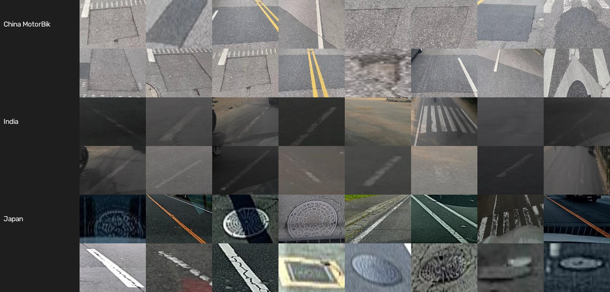
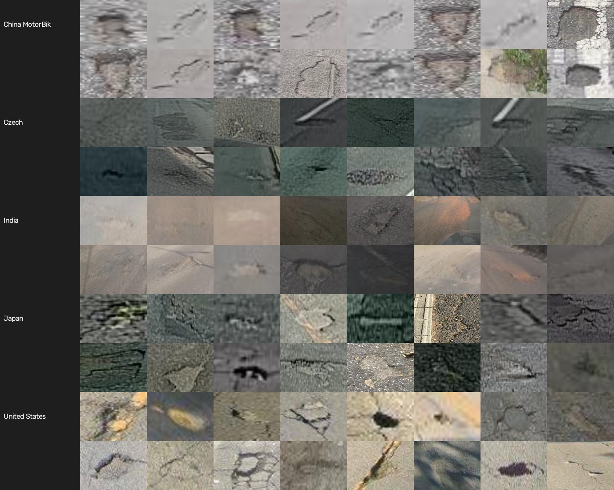
scripts/01_preparar_dataset.py)O zip oficial tem 13 GB, com um zip por país armazenado sem compressão. O script lê apenas os índices e baixa, por requisições HTTP parciais, só os XMLs e as imagens selecionadas. Seleção reprodutível (semente 42): (a) imagens de nível de rua de Japão, Índia, China (câmera em motocicleta), República Tcheca e Estados Unidos — a visão aérea de drone foi descartada por não corresponder ao uso, e a Noruega, por ter imagens de 3.650 px (10,6 GB); (b) todas as imagens com pelo menos um buraco (D40); (c) uma amostra de imagens sem buraco equivalente a 25% das positivas, com trincas, faixas e bueiros, que ensinam o modelo a não confundi-los com buracos. Como o teste oficial do RDD2022 não tem rótulos públicos, dividimos as imagens rotuladas em 70/15/15 por blocos de 20 quadros consecutivos: quadros vizinhos de um mesmo trajeto ficam sempre no mesmo conjunto, o que evita vazamento entre treino e teste.
| Split | Imagens | Com buraco | Caixas de buraco | Japão | Índia | China (moto) | Rep. Tcheca | EUA |
|---|---|---|---|---|---|---|---|---|
| Treino | 2.960 | 2.385 | 4.249 | 1.194 | 1.377 | 154 | 131 | 104 |
| Validação | 610 | 480 | 838 | 286 | 261 | 29 | 19 | 15 |
| Teste | 622 | 489 | 910 | 258 | 274 | 22 | 42 | 26 |
Tabela 1 — Dataset VigiaVia derivado da release oficial do RDD2022 (classe D40), dividido 70/15/15 por blocos de 20 quadros consecutivos.
configs/treino.yaml)Os hiperparâmetros foram escolhidos a partir das características do problema (Tabela 2). Destaca-se a decisão sobre os aumentos de dados: rotação e espelhamento vertical foram desativados porque não ocorrem com câmera veicular, enquanto variações de brilho e de escala reproduzem sol, sombra e distância.
| Hiperparâmetro | Valor | Justificativa |
|---|---|---|
| Resolução de entrada | 640 px | imagens do RDD2022 têm 600×600 px; preserva buracos pequenos |
| Épocas / early stopping | 60 / paciência 20 | transfer learning converge rápido |
| Lote (batch) | 16 | cabe em 8 GB de VRAM com precisão mista (AMP) |
| Otimizador | AdamW, lr 0,002 (auto) | escolha automática pelo nº de iterações |
| Taxa de aprendizado | decaimento cosseno | convergência estável no fim do treino |
| Aumentos de dados | mosaic, HSV, escala ±50%, translação 10%, espelho horizontal | variação de luz, distância e posição da câmera veicular |
| Aumentos evitados | rotação, espelho vertical | não ocorrem com câmera veicular (céu embaixo) |
| close_mosaic | 10 últimas épocas | aproxima o treino da distribuição real no final |
| Semente | 42 | reprodutibilidade (deterministic=True) |
| Cache | disco (.npy) | o gargalo medido era a CPU (GPU a ~40%); com cache a GPU passou de 85% |
Tabela 2 — Configuração de treino (configs/treino.yaml), comum aos três experimentos.
scripts/02_treinar.py)Treinamos o YOLO26n (nano, para celular e borda), o YOLO11n (mesmo porte, geração anterior — comparação justa de arquitetura) e o YOLO26s (cerca de 4× mais parâmetros — para medir o ganho de capacidade). No primeiro teste a GPU ficou em ~40% de uso: o gargalo era a decodificação das imagens pela CPU. Com o cache em disco das imagens decodificadas, a utilização passou de 85%.
scripts/03_avaliar.py)Cada modelo foi avaliado na validação e no teste; o teste nunca foi usado em decisões. O limiar de confiança de operação é o que maximiza o F1 na validação. A escolha do modelo de produção segue uma regra definida antes de olhar o teste: entre os modelos a até 1,5 ponto percentual do melhor mAP@0,5:0,95 de validação, escolhe-se o de menor latência, porque o produto roda em celulares e câmeras embarcadas.
No teste, casamos predições e anotações (IoU ≥ 0,5) para medir precisão, revocação e F1 no limiar de operação por país de origem e por iluminação (tercis do brilho médio da imagem), além da revocação por tamanho do buraco (pequeno, médio e grande, critério COCO) e do AP por país. Também geramos mosaicos de acertos, falsos positivos e falsos negativos.
Calculamos o índice de severidade das 4.249 caixas de treino e adotamos os tercis como limiares (média ≥ 0,009; alta ≥ 0,030).
scripts/04 e 05)Exportamos o modelo para ONNX (opset 17, simplificado), conferimos que a precisão se mantém no teste e medimos a latência em GPU (FP16 e FP32) e em CPU, com 15 inferências de aquecimento e média e percentil 95 de até 200 repetições sobre imagens reais.
src/vigiavia/tempo_real.py, scripts/06 e 06b)Testamos o pipeline completo — leitura do vídeo, detecção, ByteTrack, severidade, HUD e borragem de rostos — em quatro vídeos do Wikimedia Commons com licença aberta, fora da distribuição de treino (câmera na mão, outra época e outros países), incluindo um vídeo gravado na Rua Sílvia, Bela Vista, São Paulo.
api/, tests/)Implementamos a API, a interface web (cidadão e zeladoria) e testes automatizados (pytest) do contrato: detecção, rejeição de arquivos inválidos, deduplicação geográfica, ordenação por prioridade e validação humana.
scripts/07 a 09)O notebook executado, este relatório e o vídeo de demonstração são gerados por scripts a partir dos mesmos artefatos, o que mantém números, figuras e código consistentes.
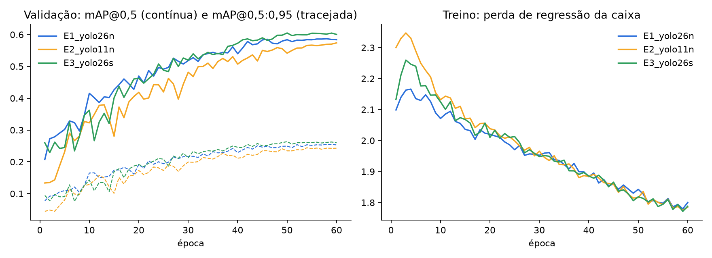
| Experimento | Parâm. (M) | Treino (min) | Val mAP50-95 | Teste mAP50 | Teste mAP50-95 | Teste P | Teste R | Inferência GPU (ms) | Limiar F1 |
|---|---|---|---|---|---|---|---|---|---|
| E1_yolo26n | 2,53 | 33 | 0,255 | 0,585 | 0,259 | 0,670 | 0,526 | 3,15 | 0,30 |
| E2_yolo11n | 2,60 | 34 | 0,244 | 0,561 | 0,249 | 0,634 | 0,521 | 2,91 | 0,26 |
| E3_yolo26s | 9,95 | 42 | 0,264 | 0,589 | 0,260 | 0,608 | 0,556 | 4,73 | 0,29 |
Tabela 3 — Comparação dos experimentos (linha destacada: modelo escolhido para produção). Inferência medida pelo Ultralytics na validação (lote 16).
Os três modelos convergiram em 33–43 minutos (Figura 1). Na validação, o YOLO26s obteve o maior mAP@0,5:0,95 (0,264), seguido do YOLO26n (0,255) e do YOLO11n (0,244). No mesmo porte (≈2,5 milhões de parâmetros), a nova geração superou a anterior em 1,1 p.p. de mAP@0,5:0,95 e 2,4 p.p. de mAP@0,5 no teste, o que confirma o ganho das melhorias do YOLO26 para objetos pequenos. Já o YOLO26s, com quase 4× mais parâmetros, ganhou só 0,9 p.p. na validação. Pela regra definida antes de olhar o teste, o YOLO26n foi escolhido: está dentro da margem de 1,5 p.p. e é o mais leve, ou seja, o que roda melhor em celulares e câmeras embarcadas. O teste confirmou a escolha: 0,585 contra 0,589 de mAP@0,5 do YOLO26s.
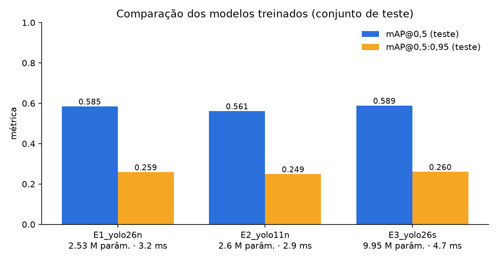
No conjunto de teste, o YOLO26n alcançou mAP@0,5 de 0,585 e mAP@0,5:0,95 de 0,259. No limiar de operação de 0,305, escolhido na validação, foram 459 acertos, 193 falsos positivos e 451 buracos perdidos: precisão de 70% e revocação de 50% (F1 de 0,59). Na prática, de cada 10 alertas, 7 são buracos reais. Uma revocação de 50% por imagem é menos limitante do que parece em vídeo: a câmera veicular vê o mesmo buraco em vários quadros, e basta uma detecção confirmada pelo rastreador para gerar o relato. Esses números estão em linha com a literatura do RDD2022, em que buracos (D40) estão entre as classes mais difíceis por serem pequenos, de bordas difusas e de rotulagem ambígua.
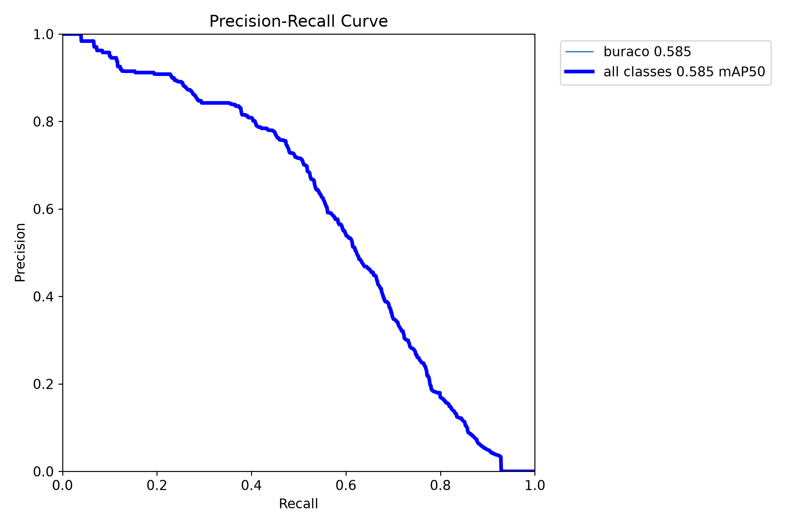
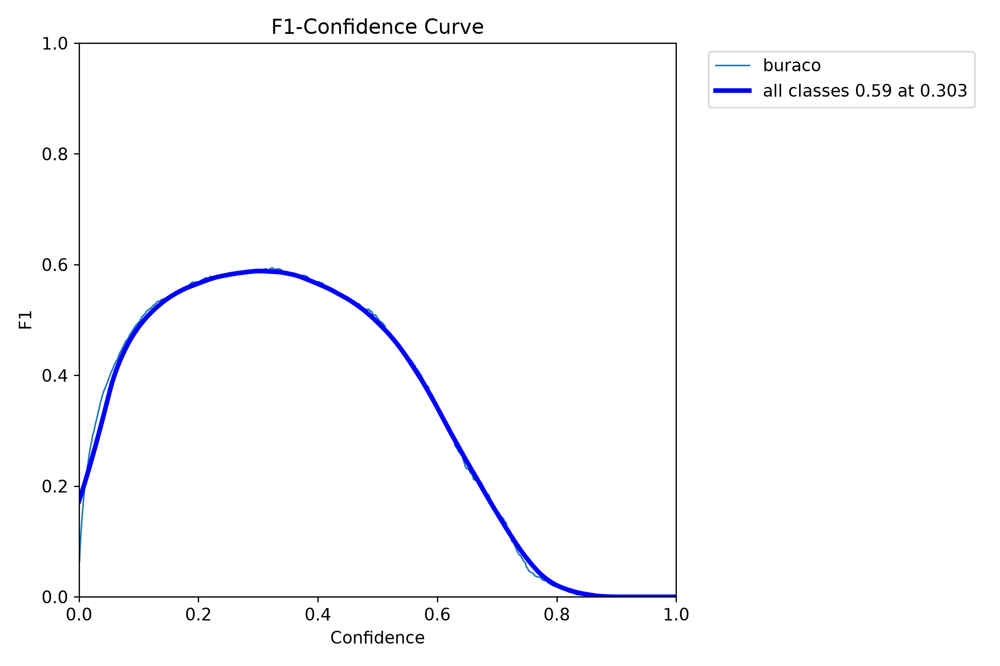
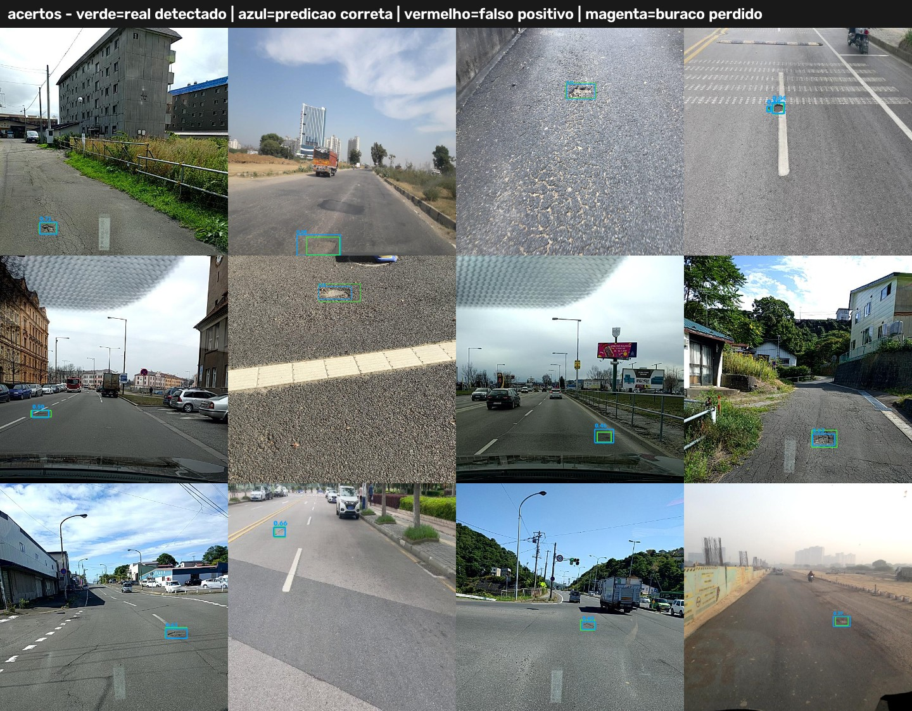
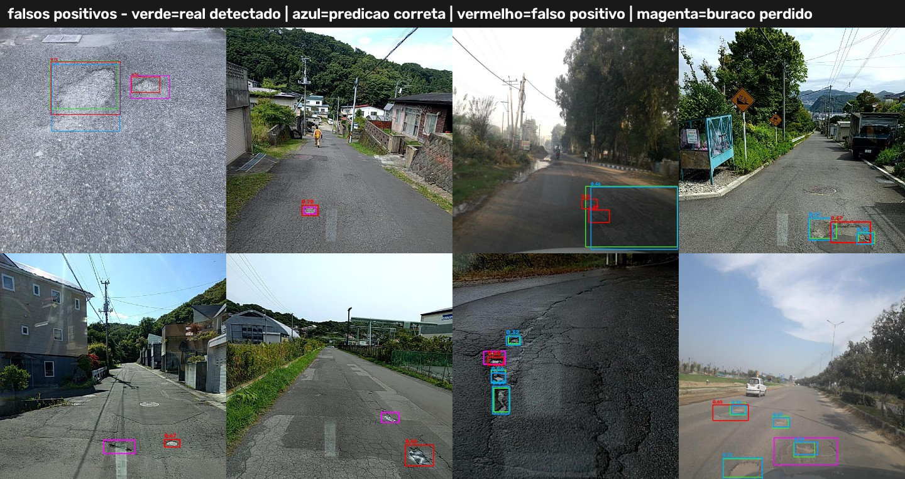
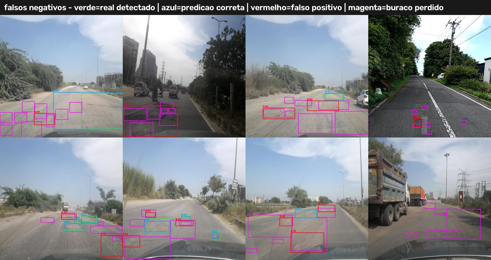
A inspeção dos mosaicos mostra três padrões. (1) Parte dos falsos positivos são buracos reais não anotados ou detecções corretas com a caixa deslocada (IoU < 0,5): a métrica penaliza o modelo por incompletude do rótulo, o que reforça a validação humana antes da ordem de serviço. (2) Remendos escuros e manchas de umidade às vezes são confundidos com buracos. (3) Os falsos negativos concentram-se em buracos rasos, com pouco contraste ou parcialmente encobertos por sombras. Por outro lado, o modelo não confunde tampas de bueiro com buracos, justamente a confusão que a auditoria de rótulos evitou.
| Subgrupo (teste) | VP | FP | FN | Precisão | Revocação | F1 |
|---|---|---|---|---|---|---|
| geral | 459 | 193 | 451 | 70,4% | 50,4% | 0,588 |
| país: China_MotorBike | 29 | 2 | 1 | 93,5% | 96,7% | 0,951 |
| iluminação: média | 126 | 53 | 117 | 70,4% | 51,8% | 0,597 |
| iluminação: clara | 200 | 88 | 184 | 69,4% | 52,1% | 0,595 |
| país: Czech | 20 | 10 | 26 | 66,7% | 43,5% | 0,526 |
| iluminação: escura | 133 | 52 | 150 | 71,9% | 47,0% | 0,568 |
| país: India | 197 | 101 | 266 | 66,1% | 42,5% | 0,518 |
| país: Japan | 201 | 74 | 144 | 73,1% | 58,3% | 0,648 |
| país: United_States | 12 | 6 | 14 | 66,7% | 46,2% | 0,545 |
| Tamanho do buraco (COCO) | Buracos no teste | Detectados | Revocação |
|---|---|---|---|
| pequeno (<32²px) | 210 | 107 | 50,9% |
| médio (32²–96²px) | 517 | 255 | 49,3% |
| grande (>96²px) | 183 | 97 | 53,0% |
| País de origem (teste) | Imagens | mAP@0,5 | mAP@0,5:0,95 |
|---|---|---|---|
| China MotorBike | 22 | 0,986 | 0,567 |
| Czech | 42 | 0,472 | 0,162 |
| India | 274 | 0,499 | 0,201 |
| Japan | 258 | 0,670 | 0,315 |
| United States | 26 | 0,533 | 0,300 |
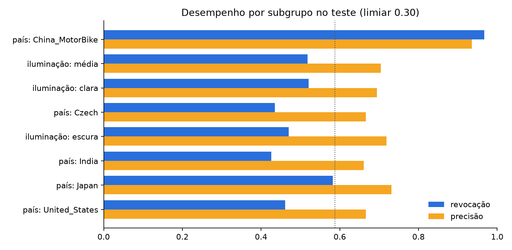
O desempenho varia por origem das imagens: o F1 vai de 0,52 (Índia, estradas sem marcação e com poeira) a 0,65 (Japão); a China (moto) chega a 0,95, mas são só 22 imagens e 30 buracos, um intervalo de confiança largo. Verificamos por hash perceptual (dHash) que não há quase-duplicatas entre teste e treino em nenhum país (0%), então o número não vem de vazamento. Imagens escuras têm revocação menor (0,47 contra 0,52 nas claras), e a revocação é parecida entre buracos pequenos (0,51), médios (0,49) e grandes (0,53). O ponto de atenção para o Brasil é que nenhum país do treino é brasileiro: o próximo passo é coletar imagens brasileiras pelo próprio aplicativo, com consentimento, e retreinar, medindo de novo os vieses.
| Modelo | Execução | ms/imagem (média) | ms (p95) | FPS |
|---|---|---|---|---|
| E1_yolo26n | PyTorch GPU FP16 | 16,1 | 20,1 | 62 |
| E1_yolo26n | PyTorch GPU FP32 | 15,3 | 20,6 | 65 |
| E1_yolo26n | PyTorch CPU FP32 | 35,5 | 38,1 | 28 |
| E2_yolo11n | PyTorch GPU FP16 | 16,1 | 19,0 | 62 |
| E2_yolo11n | PyTorch GPU FP32 | 12,9 | 14,3 | 78 |
| E2_yolo11n | PyTorch CPU FP32 | 35,4 | 36,8 | 28 |
| E3_yolo26s | PyTorch GPU FP16 | 14,9 | 15,6 | 67 |
| E3_yolo26s | PyTorch GPU FP32 | 14,1 | 14,6 | 71 |
| E3_yolo26s | PyTorch CPU FP32 | 72,0 | 76,1 | 14 |
| produção (ONNX) | ONNX Runtime CPU | 25,6 | 28,2 | 39 |
Tabela 4 — Latência de inferência (imagem 640 px, sem pré/pós-processamento de vídeo). ONNX: modelo de produção. Paridade PyTorch × ONNX no teste: mAP@0,5 0,585 × 0,582.
| Vídeo real (fora do treino) | Resolução | Quadros | Pipeline (ms/quadro) | FPS do pipeline | Trilhas | Buracos confirmados |
|---|---|---|---|---|---|---|
| Cars Moving into pothole.webm | 1920x1080 | 621 | 54,2 | 18 | 3 | 3 |
| Rainwater-Filled Potholes on a Community Road.webm | 1920x1080 | 869 | 54,7 | 18 | 22 | 15 |
| Pothole.ogv | 1920x1080 | 420 | 51,4 | 19 | 4 | 4 |
| Buraco na rua Sílvia, 276 (Bela Vista).webm | 1280x720 | 787 | 74,2 | 14 | 18 | 7 |
Tabela 5 — Pipeline completo em vídeos reais (decodificação + detecção + BoT-SORT + borragem de rostos + HUD) na RTX 3070.
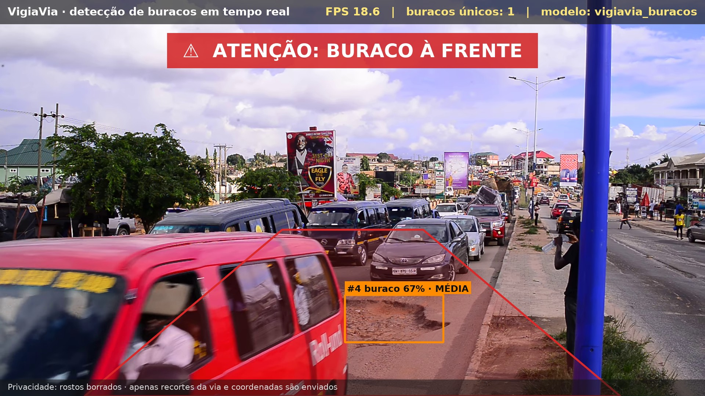
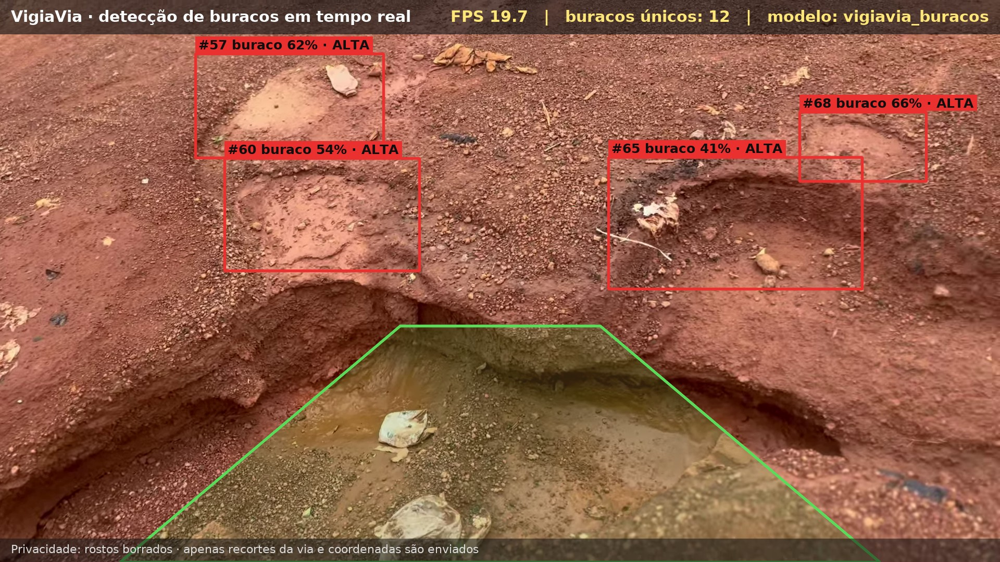
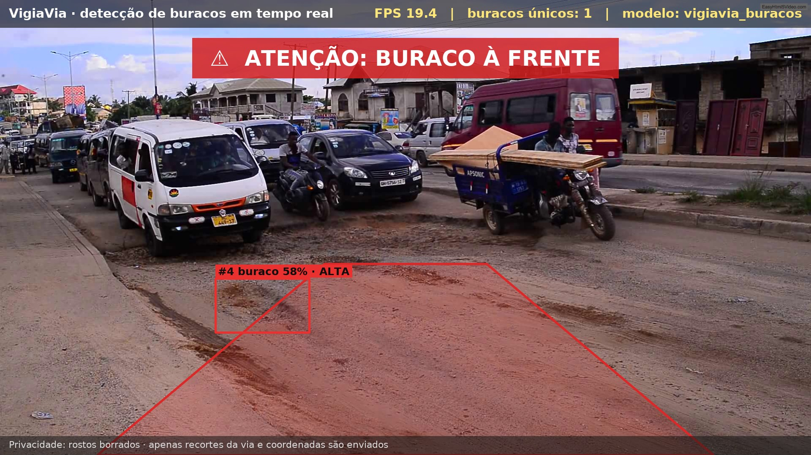
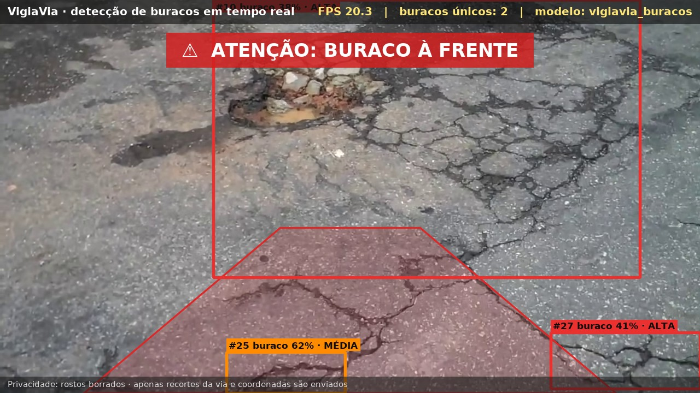
Só a inferência do YOLO26n roda a 62 FPS na GPU e a 39 FPS em CPU com ONNX Runtime, acima dos requisitos de 25 e 10 FPS. O pipeline completo em vídeo 1080p (decodificação, detecção, rastreamento com compensação de movimento, borragem de rostos e HUD) roda a 18–19 FPS na RTX 3070. A 40 km/h isso equivale a um quadro a cada ~0,6 m de via, suficiente para cada buraco aparecer em vários quadros. No vídeo de São Paulo (Figura 8, à direita), gravado com a câmera na mão a poucos centímetros do asfalto, o modelo — que nunca viu imagens do Brasil — detectou o buraco e o alerta de realidade aumentada disparou. A câmera tremida fragmentava trilhas: trocamos o ByteTrack pelo BoT-SORT com compensação global de movimento (fluxo óptico esparso), suprimimos caixas aninhadas e criamos uma deduplicação espaço-temporal de eventos, que eliminou 4 trilhas duplicadas e reduziu a contagem de 21 para 7 eventos neste vídeo. O ONNX com NMS manteve a precisão do PyTorch (mAP@0,5 de 0,582 contra 0,585); a variante fim a fim, sem NMS, perdeu 4,3 p.p. e foi descartada — decisão tomada por medição, não por suposição.
A Figura 9 mostra a interface web servida pela API. No fluxo do cidadão, uma foto ou a câmera ao vivo é analisada — no servidor ou no próprio aparelho, via ONNX — e o relato leva apenas o recorte da via, a severidade, a confiança e a localização. No fluxo da zeladoria, relatos repetidos aparecem como confirmações do mesmo buraco e a fila é ordenada por prioridade; o servidor público confirma, descarta ou marca como resolvido, e nenhuma ordem de serviço nasce sem decisão humana. Resultado dos testes automatizados do contrato da API:
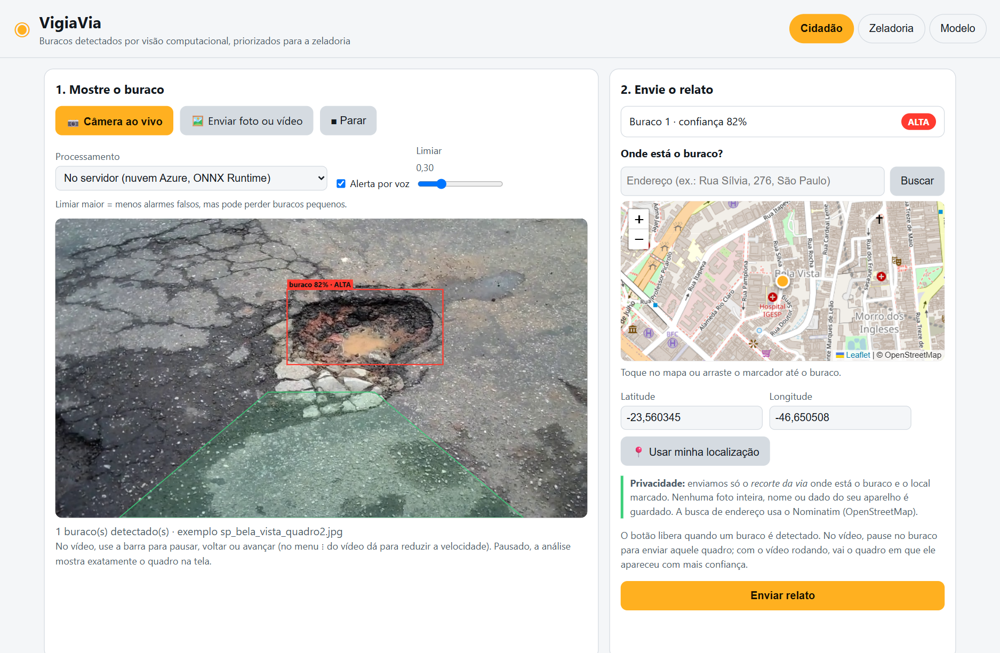
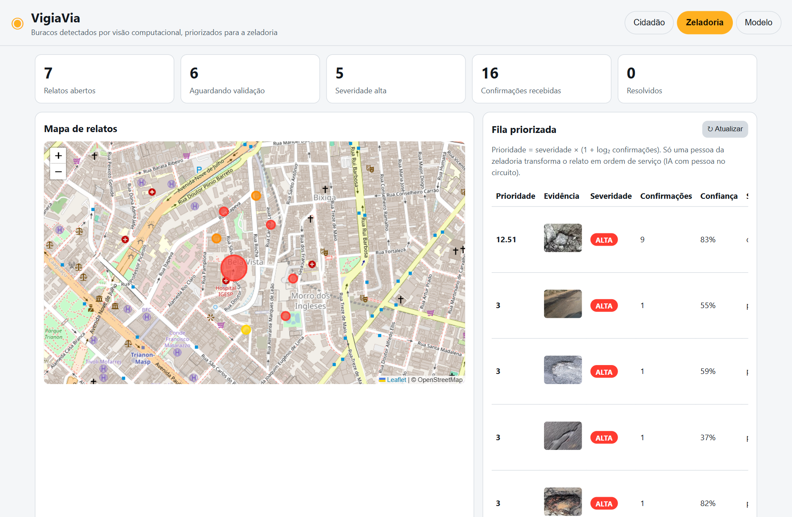
pytest -q tests -> 9 passed, 1 warning in 5.26s
O objetivo foi atingido. Realizamos o treinamento customizado de três arquiteturas YOLO para detectar buracos com dados reais e abertos e escolhemos o YOLO26n por uma regra explícita. Ele detecta buracos em tempo real em GPU, em CPU e no navegador do celular, e está integrado ao MVP por uma API que converte detecções em relatos únicos, georreferenciados e priorizados. Isso ataca diretamente a fila de chamados duplicados relatada pela Prefeitura de São Paulo, e a interface de realidade aumentada alerta o condutor no momento em que o buraco entra na trajetória.
Três resultados de engenharia merecem destaque. (1) A auditoria dos rótulos evitou treinar um modelo que detectaria faixas e bueiros: sem ela, as métricas pareceriam melhores (0,67 de mAP@0,5) e o produto não funcionaria. (2) As decisões foram tomadas por medição: escolha do modelo, do limiar, da variante ONNX e do rastreador. (3) A privacidade e a pessoa no circuito fazem parte da arquitetura, não de um aviso no rodapé.
Limitações: revocação de 50% por imagem; nenhum dado brasileiro no treino; severidade como índice relativo, não medida física; pipeline completo abaixo de 25 FPS em 1080p; e coordenadas fixas nos vídeos de teste (sem GPS). Próximos passos: coletar e anotar imagens brasileiras pelo próprio app (aprendizado ativo com as validações da zeladoria), treinar em resolução maior para buracos distantes, integrar o GPS do celular e o SP156, e medir em campo os indicadores de impacto: tempo entre detecção e reparo, chamados duplicados evitados e precisão das detecções confirmadas. Com isso, o VigiaVia contribui para os ODS 11 (11.2 e 11.3), 9 (9.1) e 3 (3.6).
# 1) Ambiente (Python 3.12+; GPU NVIDIA opcional) python -m venv .venv && .venv\Scripts\activate # Linux/macOS: source .venv/bin/activate pip install torch==2.11.0 torchvision==0.26.0 --index-url https://download.pytorch.org/whl/cu128 pip install -r requirements.txt # 2) Dados: RDD2022 -> dataset VigiaVia (classe "buraco") python scripts/01_preparar_dataset.py --out datasets/vigiavia-rdd2022 # 3) Treino dos três modelos (≈ 1 h cada numa RTX 3070) python scripts/02_treinar.py --data datasets/vigiavia-rdd2022/data.yaml --exp E1_yolo26n E2_yolo11n E3_yolo26s # 4) Avaliação, escolha do modelo, vieses, severidade, ONNX e velocidade python scripts/03_avaliar.py --data datasets/vigiavia-rdd2022/data.yaml python scripts/04_exportar_onnx.py --data datasets/vigiavia-rdd2022/data.yaml python scripts/05_benchmark_velocidade.py --data datasets/vigiavia-rdd2022/data.yaml # 5) Tempo real (webcam) e vídeos reais cd src && python -m vigiavia.tempo_real --fonte 0 --mostrar && cd .. python scripts/06_baixar_videos_demo.py && python scripts/06b_processar_videos.py # 6) API + interface web (http://localhost:8000) e testes uvicorn api.main:app --port 8000 pytest -q